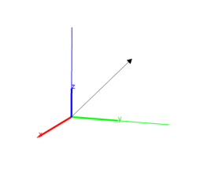
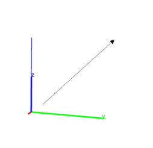
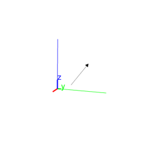

13.5.4 Vectors in space: vector
See section 12.7.4 for vectors in the plane.
The vector command returns and draws vectors, given
one of the following types of arguments:
-
A list of the coordinates of a vector. The vector is drawn
beginning at the origin.
Input:
vector([1,2,3])
Output:

- Two points or two lists of coordinates for points.
The vector is drawn from the first point to the second.
Input:
vector(point(-1,0,0),point(0,1,2))
or:
vector([-1,0,0],[0,1,2])
Output:

- A point and a vector.
The vector is drawn beginning at the point.
Input:
V := vector([-1,0,0],[0,1,2])
then:
vector(point(-1,2,0),V)
Output:
